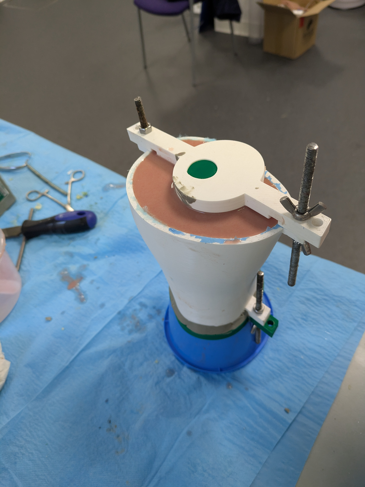
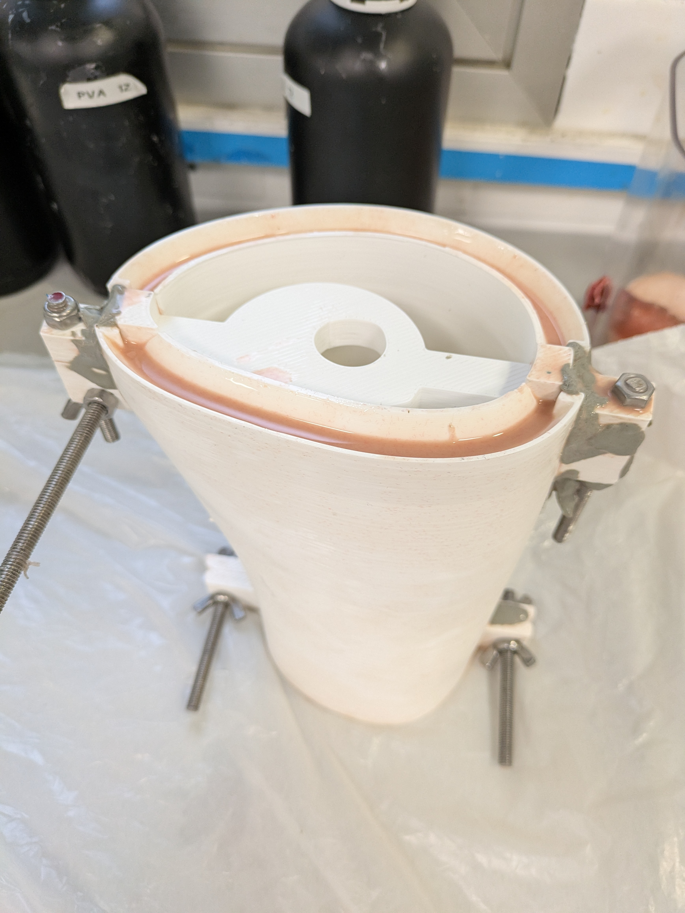
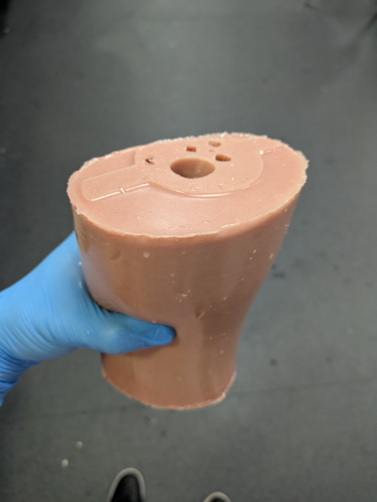
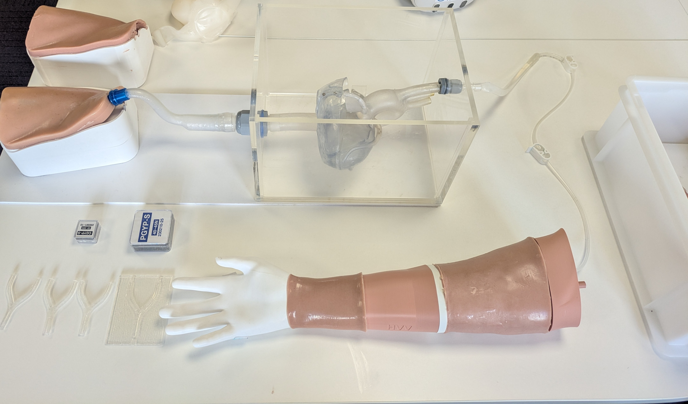
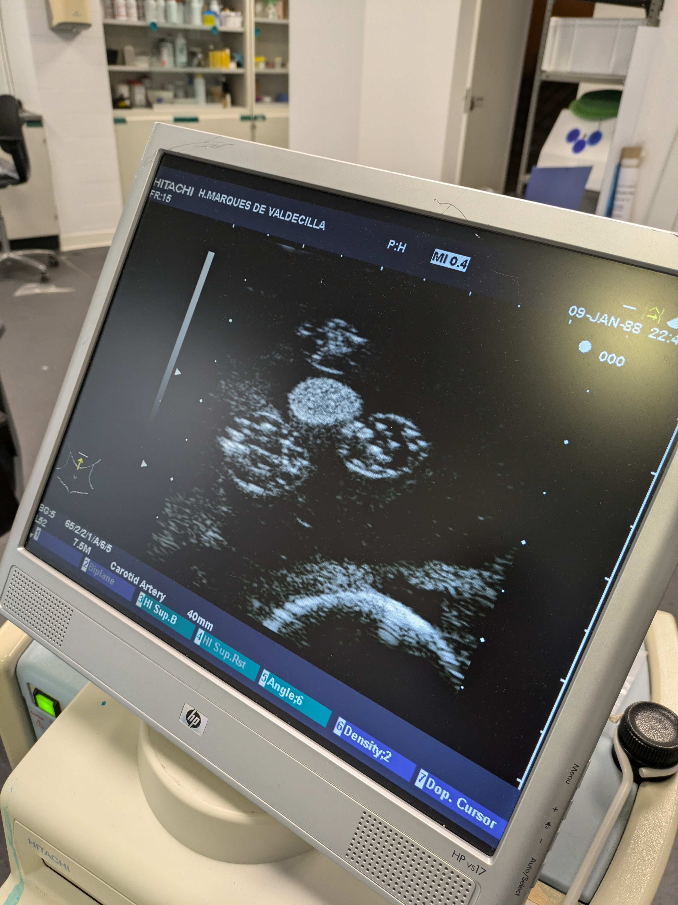
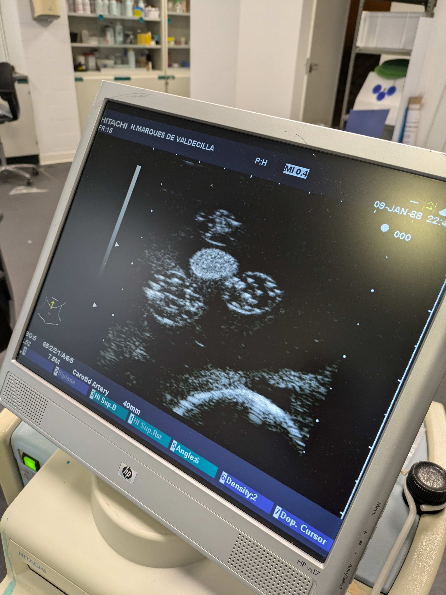
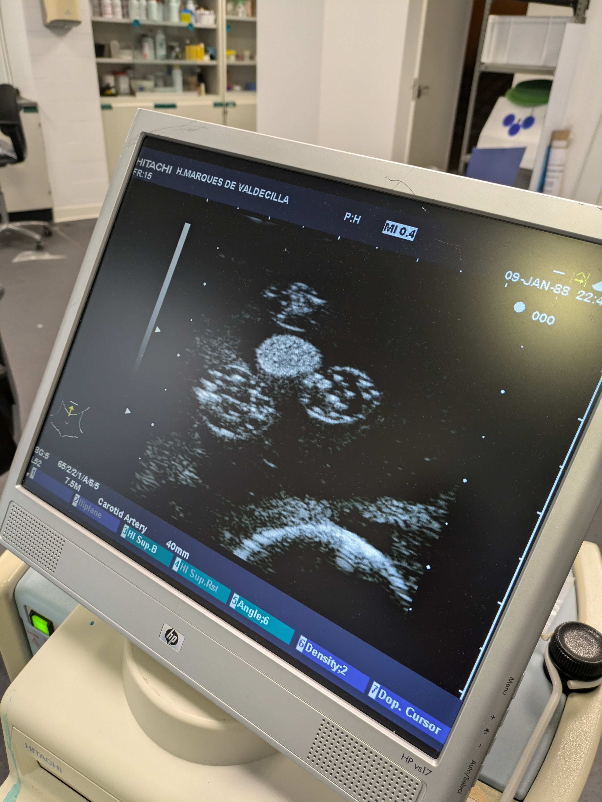

DISEÑO


RENDERS


ACCESO BRAQUIAL
DISEÑO
Partiendo de modelos anatómicos digitales realistas de la vasculatura, sistema nervioso y estructura hósea del brazo, se diseñó un simulador sintético mediante herramientas CAD como Fusion360. Sus componentes están divididos en tres categorías: acceso braquial, acceso radial y soporte.
FABRICACIÓN
Una vez finalizada la etapa de diseño, se fabricó un primer prototipo mediante impresión aditiva de filamento e inyección de moldes con diversos materiales. Actualmente se emplea en cursos de cardiología y enfermería.
FABRICACIÓN



IMPLEMENTACIÓN

 

